Hoy toca tianguis · Para pensar cosas · Piloto
Los tianguis se ven desde el espacio
Con imágenes gratuitas del satélite Sentinel-2 comparamos el día de tianguis contra el resto de la semana en seis tianguis grandes. En cuatro aparece una huella clara de las lonas y en uno, débil. Y la huella dice cosas que el registro oficial no dice: hay tianguis más largos que su trazo y trazos en la calle equivocada.
Cómo leer cada caso: a la izquierda, la mediana de todas las imágenes sin nubes tomadas el día de tianguis (2024 y 2025); en medio, la de los demás días; a la derecha, la diferencia entre las dos (más oscuro = más cambio) con el trazo del mapa en azul. Cada pixel mide 10 × 10 m.
Coincide
Av. José Clemente Orozco, José López Portillo, Iztapalapa (sábado y domingo)
La huella sigue el trazo casi exacto, pero se extiende más: mide unos 2.7 km contra los 2 km del trazo. Es el tianguis más grande del registro: 6,000 oferentes el domingo.
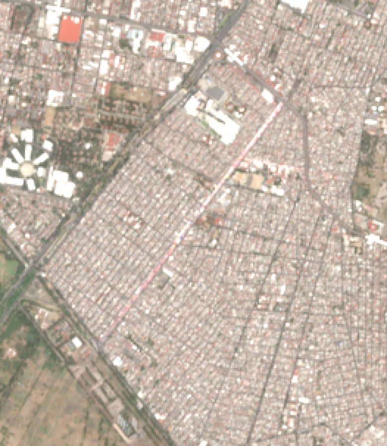

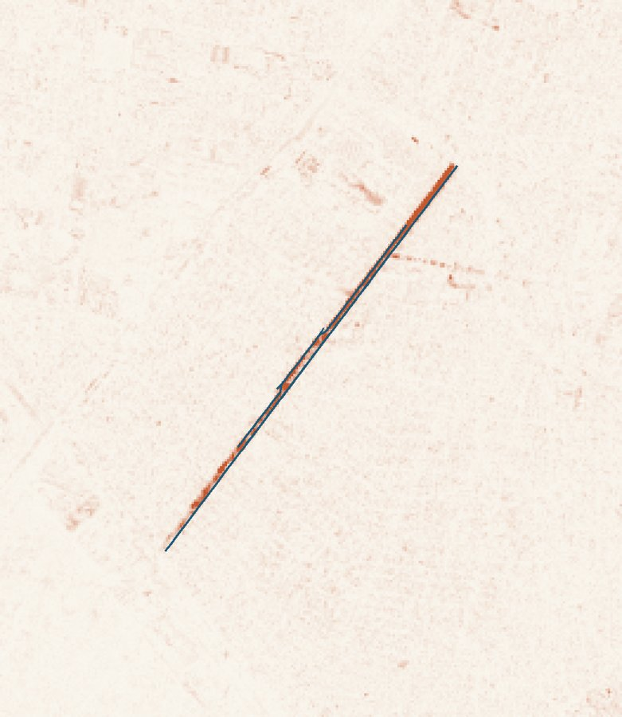
Trazo del mapa: 2,043 m. Largo aproximado de la huella conectada al trazo: 2,673 m.
Más largo que el trazo
Texcoco y Francisco Leyva, Juan Escutia, Iztapalapa (domingo)
La huella sigue más allá del trazo hacia el poniente y se mete por varias calles transversales. El tianguis real mide bastante más que el tramo oficial.
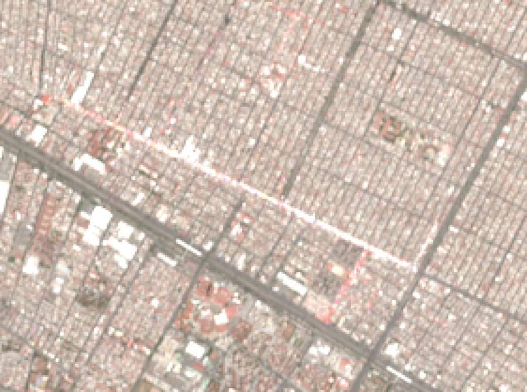
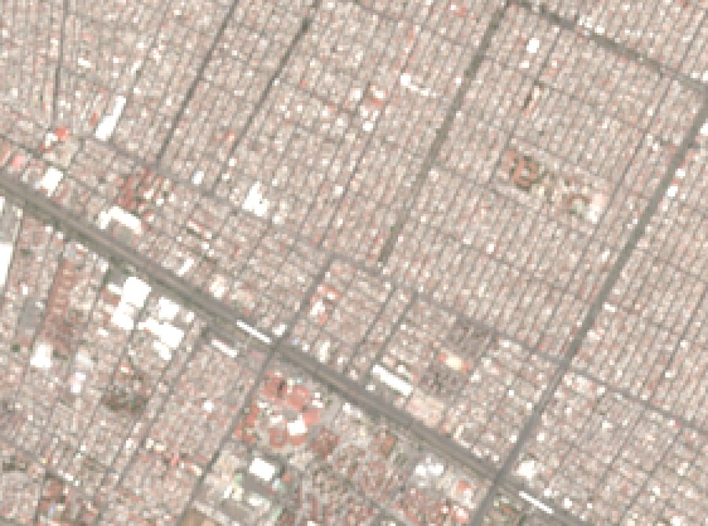
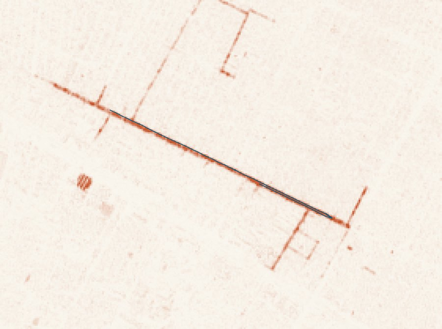
Trazo del mapa: 2,082 m. Largo aproximado de la huella conectada al trazo: 3,102 m.
Más largo que el trazo
Villa de Ayala, San Felipe de Jesús, GAM (domingo)
El trazo, que calculamos a partir del número de oferentes, cubre solo el extremo oriente. La huella sigue cientos de metros hacia el poniente, además de manzanas al noroeste.
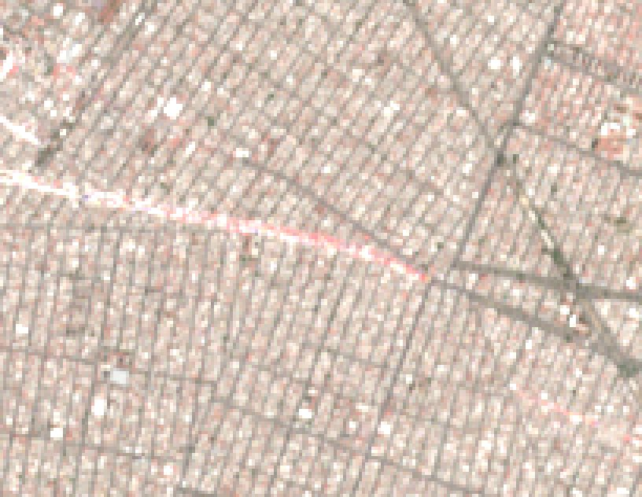
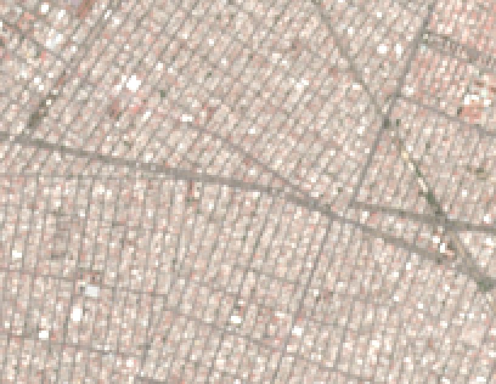
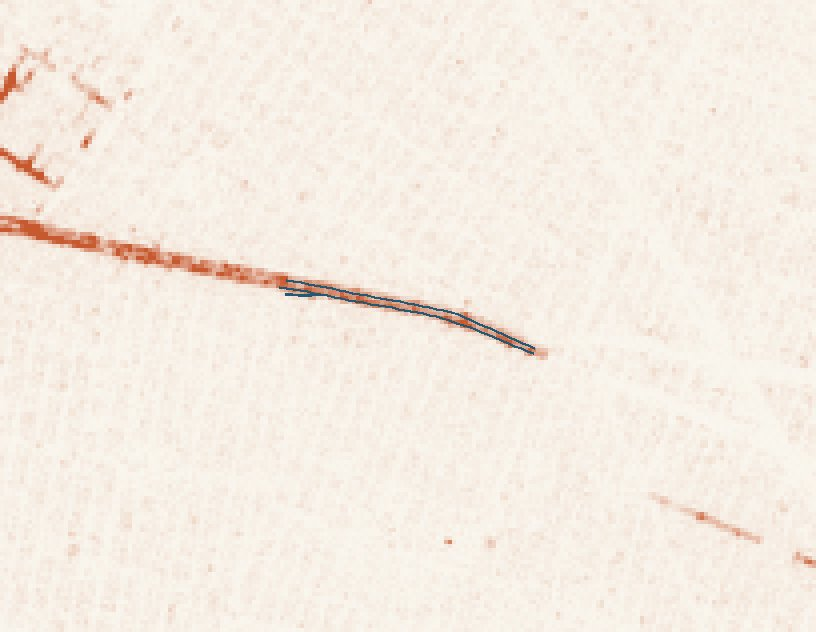
Trazo del mapa: 1,391 m. Largo aproximado de la huella conectada al trazo: 1,485 m.
Coincide
Apatlaco entre La Viga y Troncoso, Iztapalapa (sábado y domingo)
Huella débil pero alineada con el trazo. Las lonas aquí se distinguen menos del asfalto.
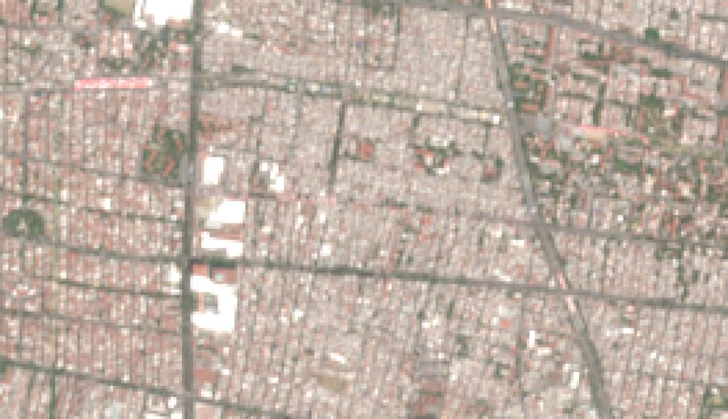
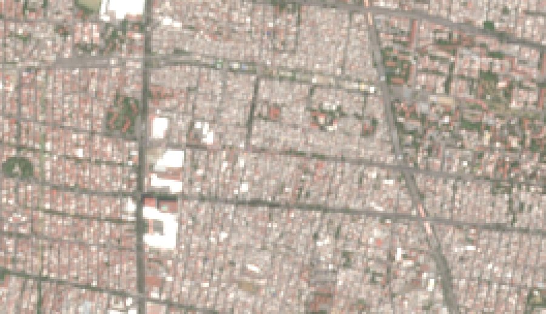
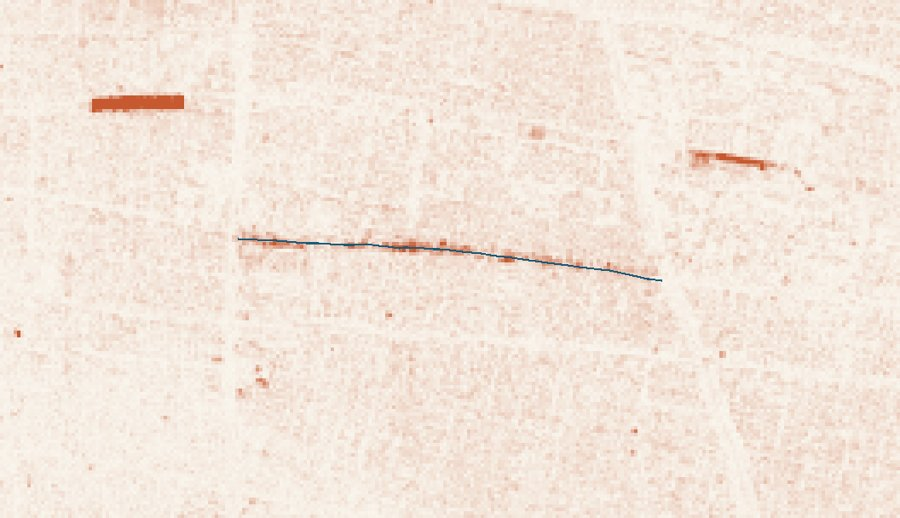
Trazo del mapa: 1,251 m. Largo aproximado de la huella conectada al trazo: 1,364 m.
Calle equivocada
Av. Gran Canal, 25 de Julio, GAM (domingo)
El trazo va sobre Gran Canal, pero la huella está en la calle perpendicular que sale hacia el oriente y en las manzanas de al lado. Es candidato a corrección.
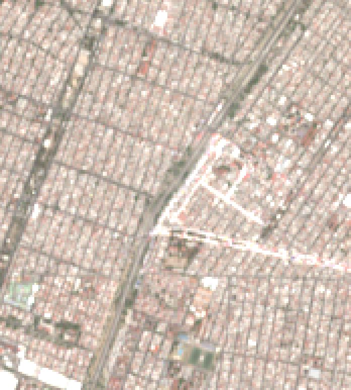
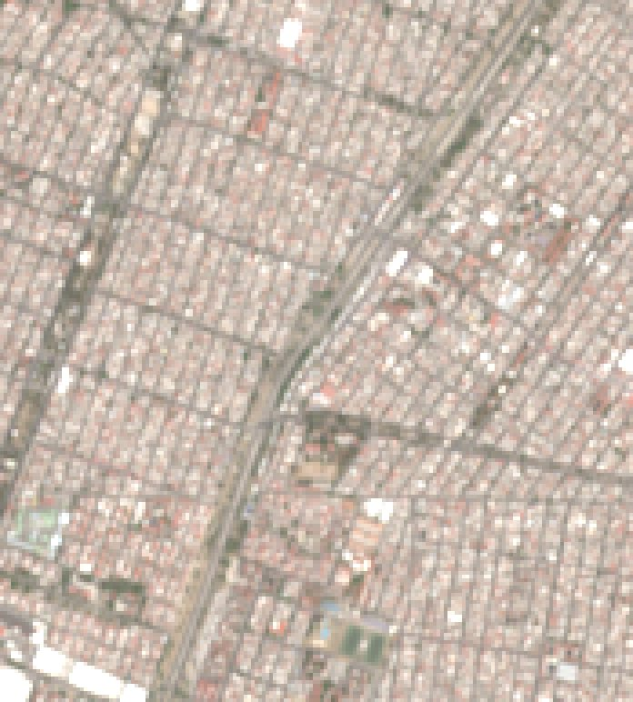
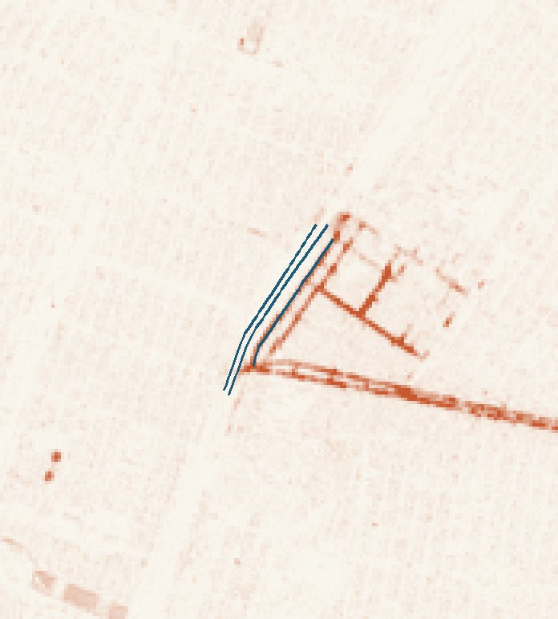
Trazo del mapa: 1,679 m. Largo aproximado de la huella conectada al trazo: 473 m.
Sin huella en el trazo
U. H. Santa Cruz Meyehualco, Iztapalapa (martes y viernes)
No aparece nada sobre el trazo. Sí hay huella en otra avenida al norte de la ventana. O el trazo está en la calle equivocada, o los puestos de entre semana son demasiado pequeños para verse a 10 m.
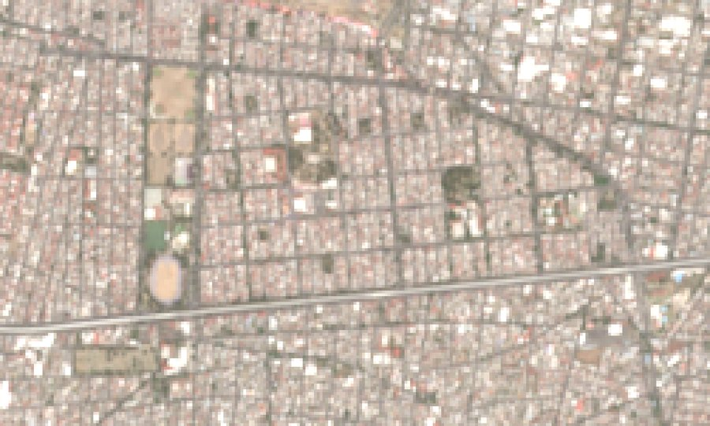
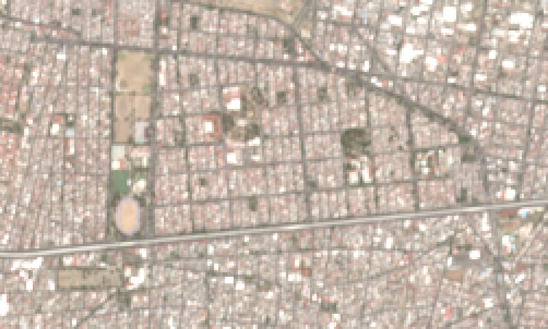
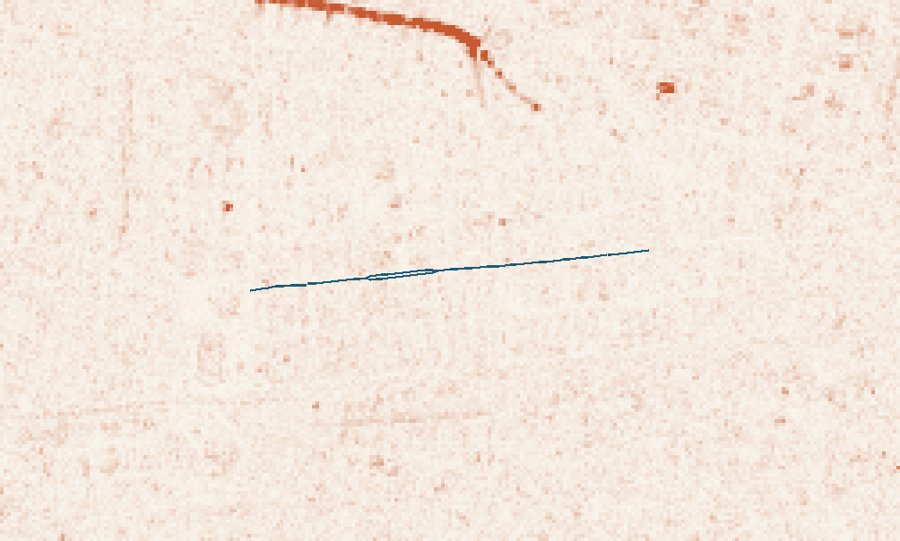
Trazo del mapa: 1,309 m. Largo aproximado de la huella conectada al trazo: 11 m.
Año por año · 2019–2025
En 2020 los tianguis se encogieron, y para 2021 ya habían vuelto
Repetimos la comparación para cada año en los 40 tianguis más grandes. En 22 la huella es lo bastante clara para seguirla. Cada punto es la huella mediana de esos tianguis ese año, como porcentaje de su propio promedio; la línea va del cuartil inferior al superior.
En 2020, la huella mediana bajó a 93% de lo normal, y 11 de los 21 tianguis con dato en 2019 y 2020 perdieron más del 15%. En 2021 la mediana ya estaba en 100%. Es consistente con los cierres y restricciones de la pandemia, aunque con pocas imágenes por año el dato de cada tianguis es ruidoso.
Los que más cambiaron
| Tianguis | 2019–2021 | 2023–2025 | Cambio |
|---|---|---|---|
| Ejercito de OrienteIztapalapa · Sábado | 560 m | 310 m | -45% |
| San Pedro CuajimalpaCuajimalpa · Sábado | 440 m | 250 m | -44% |
| Cerro de La EstrellaIztapalapa · Martes | 840 m | 630 m | -24% |
| MorelosCuauhtémoc · Domingo | 800 m | 1,210 m | +52% |
| VallejoGustavo A. Madero · Domingo | 390 m | 970 m | +150% |
Largo aproximado de la huella conectada al trazo, promedio de cada periodo. Con imágenes de 10 m, cambios menores a 100 m no son confiables. Dejamos fuera 2017 y 2018 porque hay pocas imágenes útiles y se procesaron con una versión anterior del algoritmo de la ESA.
Cómo se hizo y qué sigue
- Imágenes: 98 escenas de Sentinel-2 nivel 2A del cuadro 14QMG con menos de 20% de nubes, 2024 y 2025, leídas del archivo abierto en AWS. El satélite pasa hacia las 11:00, cuando los tianguis están montados. Quitamos nubes y sombras pixel por pixel con la máscara de escena.
- Huella: distancia de color (rojo, verde, azul) entre la mediana del día de tianguis y la mediana del resto. El largo de la huella es aproximado: esqueleto de los pixeles por encima del 99% del fondo, conectados al trazo.
- Límite: a 10 m solo se ven tianguis grandes y con lonas de color. Los chicos y los de calles con árboles se pierden.
- Serie anual: 339 escenas de 2017 a 2025 con menos de 20% de nubes. Cada escena se normaliza por su propio brillo para que la neblina y los cambios de procesamiento de la ESA no se confundan con tianguis.
- Siguiente paso: ampliar de 40 a todos los tianguis grandes y, para los chicos, probar imágenes de 3 m (PlanetScope, programa académico).